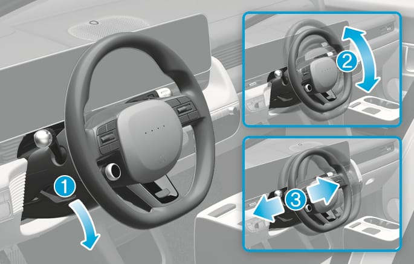

스티어링 휠 위치 조절하기
운전 자세에 맞게 스티어링 휠 위치를 조절하십시오.
주행 중에는 스티어링 휠 위치를 조절하지 마십시오. 차량을 적절히 조향할 수 없어 심각한 사고가 발생할 수 있습니다.

2C_AdjustSteeringWheelManual
-
잠금 레버(1)를 아래로 당겨 잠금을 해제하십시오.
-
스티어링 휠 높이(2)와 거리(3)를 조절하십시오.
-
잠금 레버를 위로 당겨 잠그고 스티어링 휠이 단단히 고정되었는지 확인하십시오.
스티어링 휠을 과도한 힘으로 누르거나 당기지 마십시오. 스티어링 휠 고정부가 파손될 수 있습니다.
잠금 레버 조작 시 내부 기어가 맞물리는 과정에서 걸림이 느껴질 수 있으나, 이는 고장이 아닙니다. 스티어링 휠의 위치를 다시 조절한 후 잠금 레버를 조작하십시오.